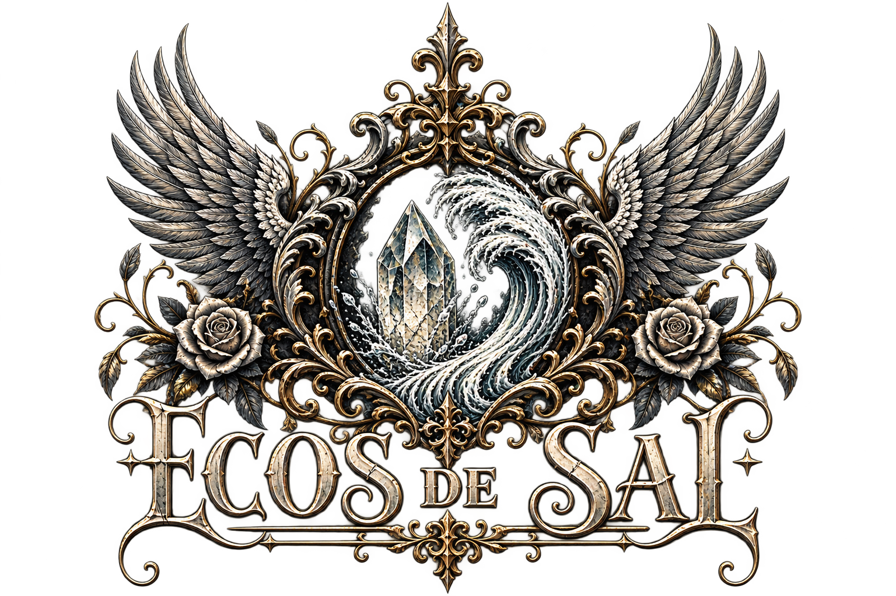
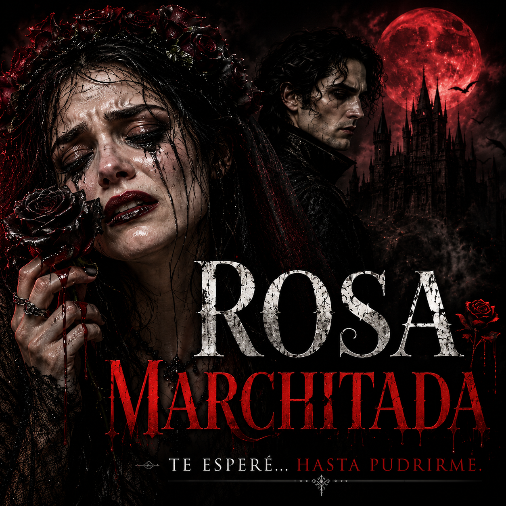
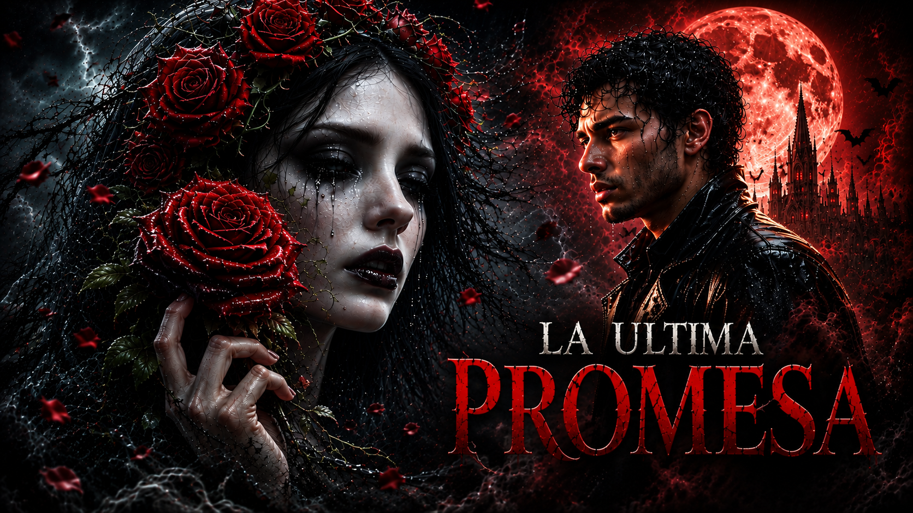
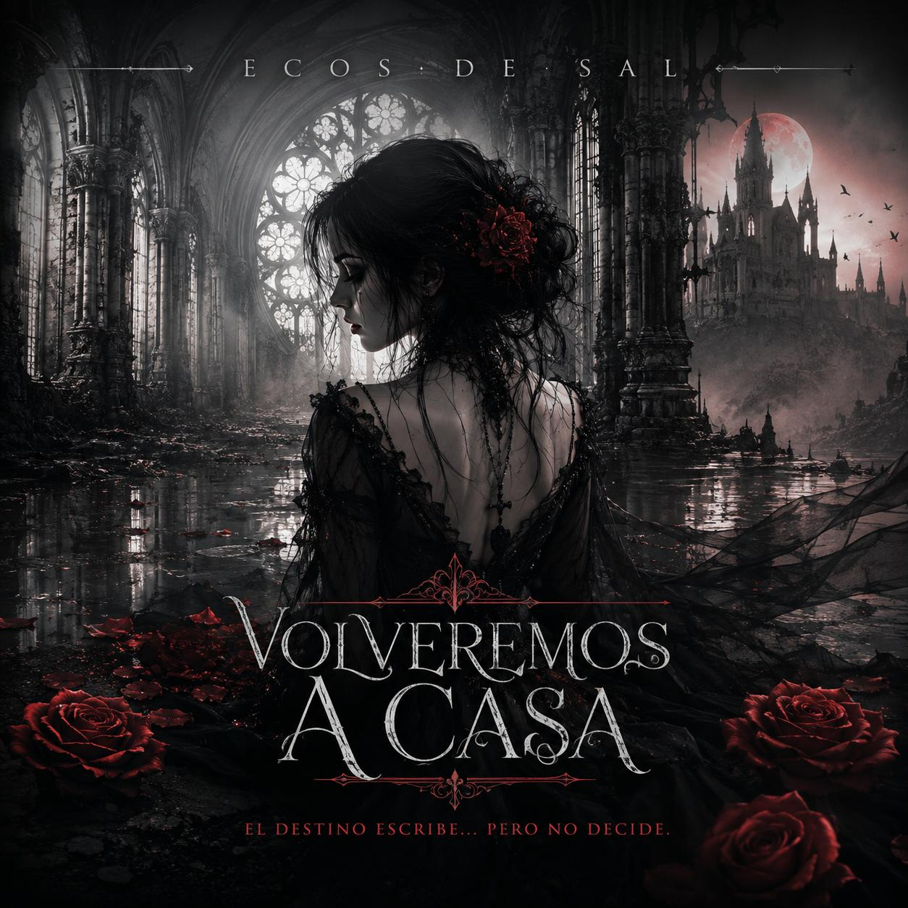
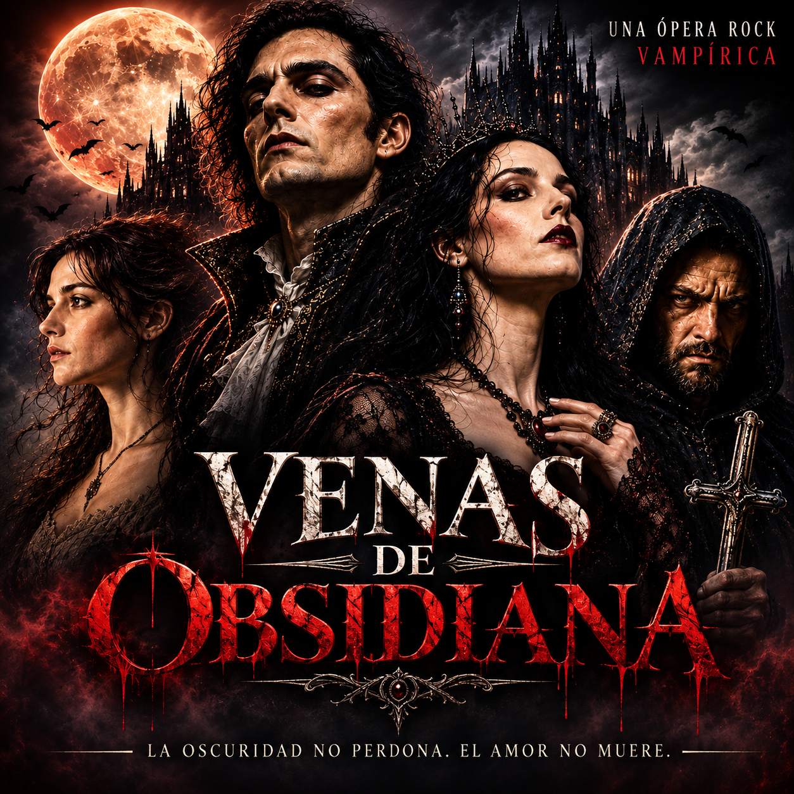
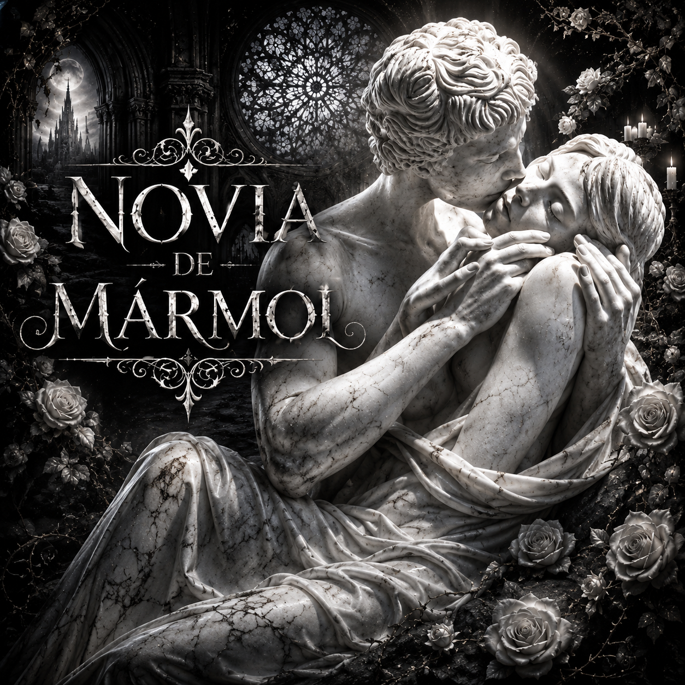

SINGLE
OFFICIAL WEBSITE

Metal gótico · Rock alternativo · Historias que sobreviven a la muerte.
BUQUE INSIGNIA
Rosa Marchitada
Una de las canciones centrales del universo de Ecos de Sal.

AMOR · PÉRDIDA · ETERNIDAD
Rosa Marchitada
Una historia de amor, pérdida y permanencia. Una rosa que sigue hablando cuando todo lo demás ha muerto.
ÚLTIMO ESTRENO
La Última Promesa
Cuando el amor se niega a morir, solo queda una última promesa.

NUEVO LANZAMIENTO
La Última Promesa
Una historia de amor más allá de la muerte, construida alrededor de una promesa que se niega a desaparecer.
LANZAMIENTO
Volveremos a Casa
El álbum que reúne diez canciones dentro del universo de Ecos de Sal.

ÁLBUM · 10 CANCIONES

El destino escribe… pero no decide.
Una colección de historias de amor, oscuridad, deseo, pérdida y destino. La puerta de entrada al universo narrativo de Ecos de Sal.

UNIVERSO · VENAS DE OBSIDIANA
Tus ojos son la noche
Una nueva historia dentro del universo de Venas de Obsidiana.
La oscuridad no perdona. El amor no muere.
DISCOGRAFÍA PUBLICADA
Historias que permanecen
Los lanzamientos publicados hasta el momento.

SINGLE
Novia de Mármol
VENAS DE OBSIDIANA
Tus ojos son la noche
ENCUÉNTRANOS
Redes & Streaming
Escucha, descubre y sigue a Ecos de Sal.
YouTubeCanal oficial
SpotifyArtista
Apple MusicArtista
YouTube MusicArtista
FacebookPágina oficial
InstagramPróximamente
PRÓXIMAMENTE
La oscuridad también se lleva puesta.
Merchandising oficial de Ecos de Sal.